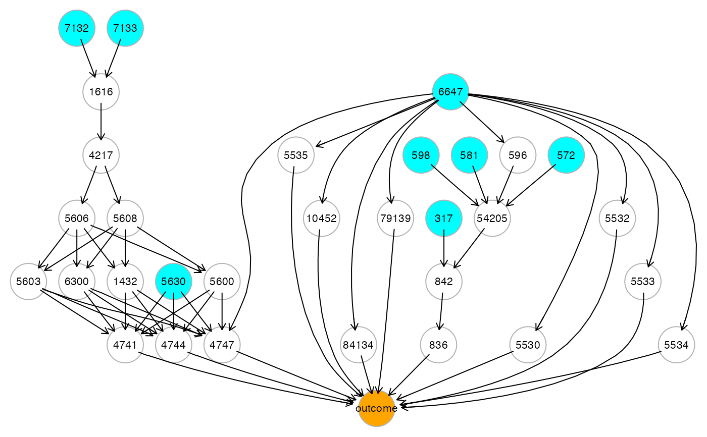
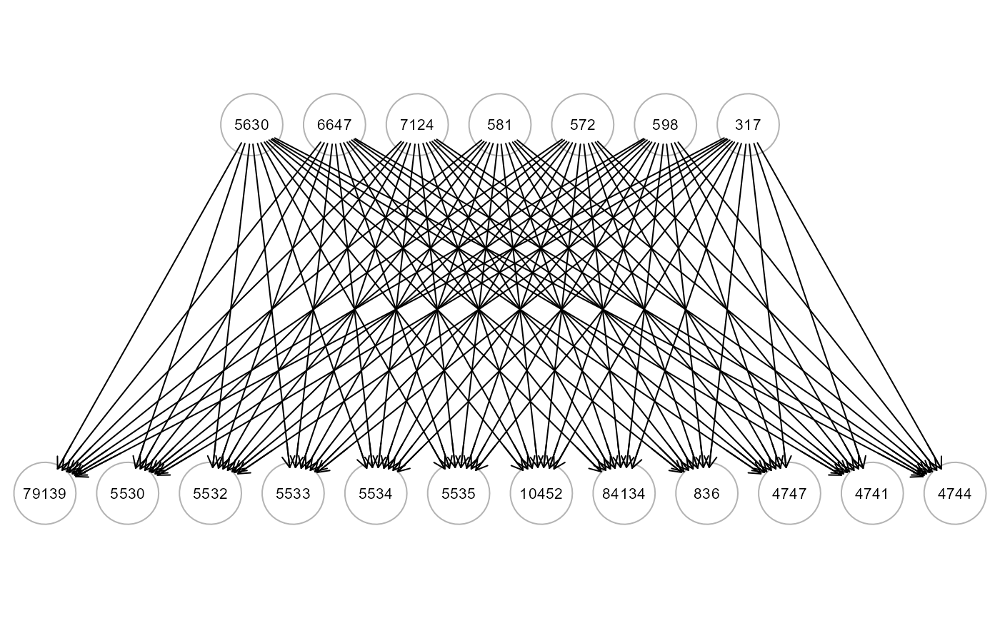
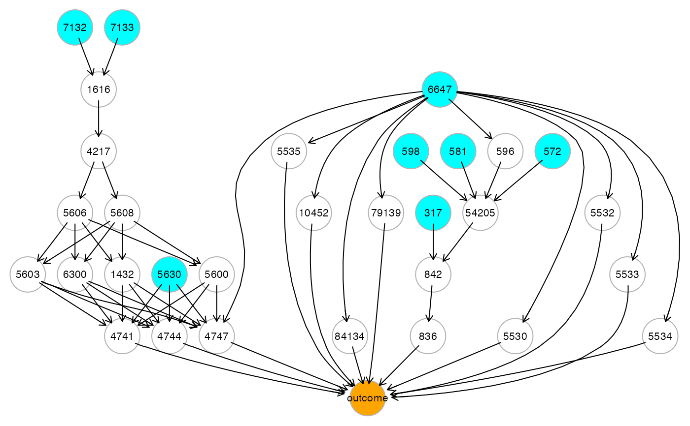
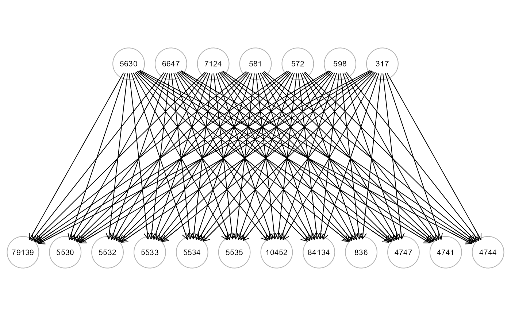

Given the values of (observed) x-variables in a SEM, this function may be used to predict the values of (observed) y-variables. The predictive procedure consists of two steps. First, the topological layer ordering of the input graph is defined. Then, the node y values in a layer are predicted, where the nodes in successive layers act as x-predictors.
Usage
# S3 method for class 'SEM'
predict(object, newdata, newoutcome = NULL, verbose = FALSE, ...)Arguments
- object
An object, as that created by the function
SEMrun()with the argumentgroupset to the defaultgroup = NULL.- newdata
A matrix with new data, with rows corresponding to subjects, and columns to variables.
- newoutcome
A new character vector (as.factor) of labels for a categorical output (target)(default = NULL).
- verbose
A logical value. If FALSE (default), the processed graph will not be plotted to screen.
- ...
Currently ignored.
Value
A list of 3 objects:
"PE", vector of the amse = average MSE over all (sink and mediators) graph nodes; r2 = 1 - amse; and srmr= Standardized Root Means Square Residual between the out-of-bag correlation matrix and the model correlation matrix.
"mse", vector of the Mean Squared Error (MSE) for each out-of-bag prediction of the sink and mediators graph nodes.
"Yhat", the matrix of continuous predicted values of graph nodes (excluding source nodes) based on out-of-bag samples.
Details
The function first creates a layer-based structure of the input graph. Then, a SEM-based predictive approach (Rooij et al., 2022) is used to produce predictions while accounting for the graph structure based on the topological layer (j=1,…,L) of the input graph. In each iteration, the response (output) variables, y are the nodes in the j=1,...,(L-1) layer and the predictor (input) variables, x are the nodes belonging to the successive, (j+1),...,L layers. Predictions (for y given x) are based on the (joint y and x) model-implied variance-covariance (Sigma) matrix and mean vector (Mu) of the fitted SEM, and the standard expression for the conditional mean of a multivariate normal distribution. Thus, the layer structure described in the SEM is taken into consideration, which differs from ordinary least squares (OLS) regression.
References
de Rooij M, Karch JD, Fokkema M, Bakk Z, Pratiwi BC, and Kelderman H (2023). SEM-Based Out-of-Sample Predictions, Structural Equation Modeling: A Multidisciplinary Journal, 30:1, 132-148. <https://doi.org/10.1080/10705511.2022.2061494>
Grassi M, Palluzzi F, Tarantino B (2022). SEMgraph: An R Package for Causal Network Analysis of High-Throughput Data with Structural Equation Models. Bioinformatics, 38 (20), 4829–4830. <https://doi.org/10.1093/bioinformatics/btac567>
Grassi, M., Tarantino, B. (2025). SEMdag: Fast learning of Directed Acyclic Graphs via node or layer ordering. PLoS ONE 20(1): e0317283. https://doi.org/10.1371/journal.pone.0317283
Author
Mario Grassi mario.grassi@unipv.it
Examples
# load ALS data
data<- alsData$exprs
data<- transformData(data)$data
#> Conducting the nonparanormal transformation via shrunkun ECDF...done.
group<- alsData$group
#...with train-test (0.5-0.5) samples
set.seed(123)
train<- sample(1:nrow(data), 0.5*nrow(data))
# predictors, source+mediator; outcomes, mediator+sink
ig <- alsData$graph; gplot(ig)
 sem0 <- SEMrun(ig, data[train,], algo="ricf", n_rep=0)
#> RICF solver ended normally after 2 iterations
#>
#> deviance/df: 6.262846 srmr: 0.3040025
#>
pred0 <- predict(sem0, newdata=data[-train,], verbose=TRUE)
#> amse r2 srmr
#> 0.8571886 0.1428114 0.2948502
# predictors, source+mediator+group; outcomes, source+mediator+sink
ig1 <- mapGraph(ig, type = "group"); gplot(ig1)

data1 <- cbind(group, data); head(data1[,5])
#> ALS2 ALS3 ALS4 ALS5 ALS6 ALS7
#> 0.4530701 0.6762093 0.5613048 0.5064807 0.1360061 0.7577341
sem1 <- SEMrun(ig1, data1[train,], algo="ricf", n_rep=0)
#> RICF solver ended normally after 2 iterations
#>
#> deviance/df: 6.210737 srmr: 0.2857586
#>
pred1 <- predict(sem1, newdata= data1[-train,], verbose=TRUE)
#> amse r2 srmr
#> 0.8581333 0.1418667 0.2849738
# predictors, source nodes; outcomes, sink nodes
ig2 <- mapGraph(ig, type = "source"); gplot(ig2)

sem2 <- SEMrun(ig2, data[train,], algo="ricf", n_rep=0)
#> RICF solver ended normally after 2 iterations
#>
#> deviance/df: 10.16805 srmr: 0.1282444
#>
pred2 <- predict(sem2, newdata=data[-train,], verbose=TRUE)
#> amse r2 srmr
#> 0.7241131 0.2758869 0.2062241
sem0 <- SEMrun(ig, data[train,], algo="ricf", n_rep=0)
#> RICF solver ended normally after 2 iterations
#>
#> deviance/df: 6.262846 srmr: 0.3040025
#>
pred0 <- predict(sem0, newdata=data[-train,], verbose=TRUE)
#> amse r2 srmr
#> 0.8571886 0.1428114 0.2948502
# predictors, source+mediator+group; outcomes, source+mediator+sink
ig1 <- mapGraph(ig, type = "group"); gplot(ig1)

data1 <- cbind(group, data); head(data1[,5])
#> ALS2 ALS3 ALS4 ALS5 ALS6 ALS7
#> 0.4530701 0.6762093 0.5613048 0.5064807 0.1360061 0.7577341
sem1 <- SEMrun(ig1, data1[train,], algo="ricf", n_rep=0)
#> RICF solver ended normally after 2 iterations
#>
#> deviance/df: 6.210737 srmr: 0.2857586
#>
pred1 <- predict(sem1, newdata= data1[-train,], verbose=TRUE)
#> amse r2 srmr
#> 0.8581333 0.1418667 0.2849738
# predictors, source nodes; outcomes, sink nodes
ig2 <- mapGraph(ig, type = "source"); gplot(ig2)

sem2 <- SEMrun(ig2, data[train,], algo="ricf", n_rep=0)
#> RICF solver ended normally after 2 iterations
#>
#> deviance/df: 10.16805 srmr: 0.1282444
#>
pred2 <- predict(sem2, newdata=data[-train,], verbose=TRUE)
#> amse r2 srmr
#> 0.7241131 0.2758869 0.2062241